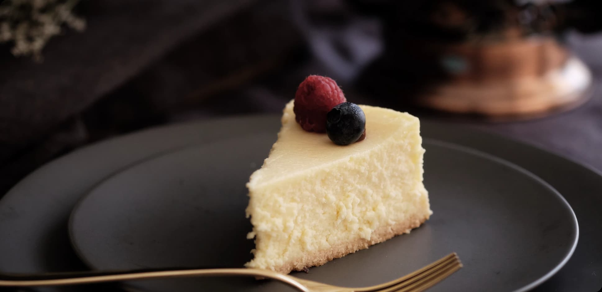

Classic Cheesecake Recipe
Look no further for a creamy and ultra smooth classic cheesecake recipe! Paired with a buttery graham cracker crust, no one can deny its simple decadence. For the best results, bake in a water bath.
-
local_dining
Yields
12 servings
-
schedule
Prep Time
45 minutes
-
schedule
Cook Time
1 hour
-
schedule
Total Time
1 3/4 hours
Ingredients
Graham Cracker Crust
Cheesecake
Instructions
- Adjust the oven rack to the lower-middle position and preheat oven to 350°F (177°C).
- Make the crust: Using a food processor, pulse the graham crackers into crumbs. Pour into a medium bowl and stir in sugar and melted butter until combined. (You can also pulse it all together in the food processor.) Mixture will be sandy. Press firmly into the bottom and slightly up the sides of a 9-inch or 10-inch springform pan. No need to grease the pan first. I use the bottom of a measuring cup to pack the crust down tightly. Pre-bake for 8 minutes. Remove from the oven and place the hot pan on a large piece of aluminum foil. The foil will wrap around the pan for the water bath in step 4. Allow crust to slightly cool as you prepare the filling.
- Make the filling: Using a handheld or stand mixer fitted with a paddle attachment, beat the cream cheese and granulated sugar together on medium-high speed in a large bowl until the mixture is smooth and creamy, about 2 minutes. Add the sour cream, vanilla extract, and lemon juice then beat until fully combined. On medium speed, add the eggs one at a time, beating after each addition until just blended. After the final egg is incorporated into the batter, stop mixing. To help prevent the cheesecake from deflating and cracking as it cools, avoid over-mixing the batter as best you can.
- Prepare the simple water bath (see note) Boil a pot of water. You need 1 inch of water in your roasting pan for the water bath, so make sure you boil enough. I use an entire kettle of hot water. As the water is heating up, wrap the aluminum foil around the springform pan. Pour the cheesecake batter on top of the crust. Use a rubber spatula or spoon to smooth it into an even layer. Place the pan inside of a large roasting pan. Carefully pour the hot water inside of the pan and place in the oven. (Or you can place the roasting pan in the oven first, then pour the hot water in. Whichever is easier for you.)
- Bake cheesecake for 55-70 minutes or until the center is almost set. When it’s done, the center of the cheesecake will slightly wobble if you gently shake the pan. Turn the oven off and open the oven door slightly. Let the cheesecake sit in the oven in the water bath as it cools down for 1 hour. Remove from the oven and water bath, then cool cheesecake completely at room temperature. Then refrigerate the cheesecake for at least 4 hours or overnight.
- Use a knife to loosen the chilled cheesecake from the rim of the springform pan, then remove the rim. Using a clean sharp knife, cut into slices for serving. For neat slices, wipe the knife clean and dip into warm water between each slice.
- Serve cheesecake with desired toppings. Cover and store leftover cheesecake in the refrigerator for up to 5 days.
Source: https://sallysbakingaddiction.com/classic-cheesecake/